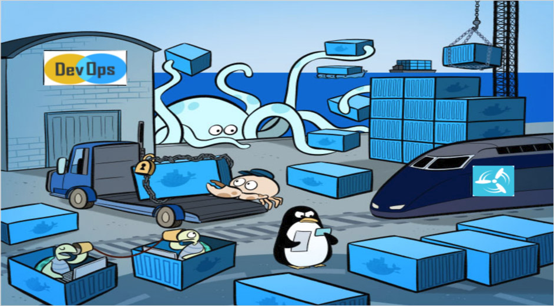

Drupal development with Docker
About me
About you
“Works in my machine“
Docker
Containers
- Isolate applications like a VM
- Doesn't create a whole VM
- Provides significant performance boost and reduces the size of the application
Comparison
VM

Containers

Common terms
- Images
- Containers
Dockerfile
FROM php:7.1-apache
RUN apt-get update && apt-get install mysql-client -y
COPY /code/ /var/www/html/new/place
WORKDIR /var/www/html/new/place
Docker Commands
Build an image from a Dockerfile
docker build [OPTIONS] CONTAINER [CONTAINER...]
Execute an image
docker run [OPTIONS] IMAGE [COMMAND] [ARG...]
List downloaded images
docker images [OPTIONS] [REPOSITORY[:TAG]]
Run a command in a running container
docker exec [OPTIONS] CONTAINER COMMAND [ARG...]
List running containers
docker ps [OPTIONS]
List stopped containers
docker ps -a
Stop running containers
docker stop [OPTIONS] CONTAINER [CONTAINER...]
Remove one or more containers
docker rm [OPTIONS] CONTAINER [CONTAINER...]
Single service
docker run -d -p 8080:80 drupal:7.58
Check the running containers
docker ps
CONTAINER ID IMAGE COMMAND CREATED STATUS PORTS NAMES
949b1aaa0bbd drupal:7.58 "docker-php-entrypoi…" About a minute ago Up About a minute 0.0.0.0:8080->80/tcp inspiring_kirch
Multiple services
Setup the MySQL service
docker run -d --name=db -e MYSQL_DATABASE=default \
-e MYSQL_ROOT_PASSWORD=root mysql:5.6
Setup the web service
docker run -d --name=web -p 8080:80 \
--link db:db drupal:7.58
Setup the DB administration tool
docker run -d --name=phpmyadmin -p 8081:80 \
-e MYSQL_ROOT_PASSWORD=root --link db:db phpmyadmin/phpmyadmin
Docker Volumes
Setup the MySQL service with persistent data
docker run -d --name db -e MYSQL_DATABASE=default \
-e MYSQL_ROOT_PASSWORD=root \
-v `pwd`/dbdata:/var/lib/mysql mysql:5.6
Setup the web service with persistent data
docker run -d --name=web -p 8080:80 --link db:db \
-v `pwd`/drupal-7.59:/var/www/html drupal:7.58
Docker Compose
Lets us define all our services in one configuration file.
With one command, it starts all the services we need.
Docker Compose Commands
Start defined services
docker-compose up [options] [--scale SERVICE=NUM...] [SERVICE...]
Build or rebuild services
docker-compose build [options]
Stop running services
docker-compose stop [options] [SERVICE...]
Stops containers and removes containers, networks, volumes, and images
docker-compose down [options]
docker-compose.yml
version: "3"
services:
web:
image: drupal:7.58
volumes:
- ./drupal-7.59:/var/www/html
ports:
- 8080:80
db:
image: mysql:5.6
volumes:
- ./dbdata:/var/lib/mysql
environment:
MYSQL_USER: root
MYSQL_PASSWORD: root
MYSQL_ROOT_PASSWORD: root
MYSQL_DATABASE: default
phpmyadmin:
image: phpmyadmin/phpmyadmin
ports:
- 8081:80
environment:
MYSQL_ROOT_PASSWORD: root
drush:
image: drush/drush:8
volumes:
- ./drupal-7.59:/app
Docker with Drush
...
drush:
image: drush/drush:8
volumes:
- ./drupal-7.59:/app
docker-compose run --rm drush [COMMANDS]
#!/usr/bin/env bash
drush="docker-compose run --rm drush"
$drush sql-drop -y
pv ./backup.sql | docker exec -i projectname_db_1 mysql -u root -proot default
$drush cr
$drush updb --entity-updates -y
$drush cim -y
$drush cr
$drush upwd admin admin